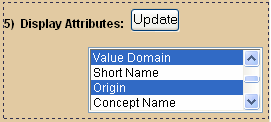

The CDE Curation Tool has an easy-to-use Search screen to help you identify and retrieve existing Administered Components from the caDSR. The tool supports Search and Create/Edit capabilities for the following Administered Components:
- Data Element
- Data Element Concept
- Value Domain
- Value Meaning
- Permissible Values (create from a Value Domain)
- Conceptual Domain
- Classification Scheme Items
- Case Report Form (CRF) Questions
- Object Class
- Property
- Concept Class
- Concept Code
- Term search is not case sensitive.
- The search 'wild card' is an asterisk: * . (For example, to find all terms that start with the letter 'A', you would enter 'A*' in the search field.)
- During searches of the NCI Enterprise Vocabulary System (EVS), the maximum number of search results returned from the Metathesaurus is 750. The limit can be set to 100, 250, 500, or 750 records.
Figure 1 is an overview of the main search screen.

FIGURE 1
Search Screen Overview
Main Menu buttons appear on every screen. Toggle over each button for sub-menus. The action Menu Buttons are enabled when results are selected. Search results are displayed in table format to the right of the search criteria pane. These fields refresh according to what you Search For.
Search Criteria Details
The only two search criteria entered as text are the Search Term and a specific Version. All other search criteria are selected from a list or by selecting a radio button.
Filtering your search means that you are entering additional information about what Administered Components you are seeking. Filtering will potentially reduce the number of search results returned and increase the likelihood that the results contain what you seek. Simple and/or Advanced Filters are included on most search pages.
Simple and Advanced Filters: The Advanced Filter includes date created, date modified, creator, and modifier to assist the user find the exact term more efficiently. Information is not retained on the Advanced Filter when switching to the Simple Filter or vice versa. Figures 2 and 3 illustrate the Simple and Advanced search filters.

FIGURE 2
Simple Filter

FIGURE 3
Advanced Filter
To Search for an item in the Curation Tool:
- Select what you want to Search For: from the drop down list.
- Select what to Search In: from the drop down list. (Varies on what is Searched For)
- Enter Text as a Search Term. (* is the wildcard)
- Click the Simple Filter or Advanced Filter link.
- Select additional attributes to display with your search results by holding down the shift (or ctrl) key and click the left mouse button on the attribute.
- Click the button to refresh display attributes.
- Click .
i You can filter by more than one Context. Hold down the shift or Ctrl key for multi-selections.
i You can filter by an exact Version number when searching for DE, DEC, or VD.
Advanced Filter Details
Anything entered in the Advanced Filter will not affect the search results if the search is started from the Simple Filter. The Advanced Filter allows you to filter by All Creators/Modifiers, by Derivation Type and by Version number. You can also filter by Date Created or Modified by entering the date in the format displayed or by clicking the calendar icon and selecting a date. The Clear link will clear the field.
i For a full list of search properties see the Search Matrix.The Curation Tool now provides you with the ability to search for Administered Components by one or more Contexts. To do this, left-click on the first context (from the lists of Contexts in item 4 of the Search interface), then press and hold down the [Ctrl] button on your keyboard. Left-click again to select additional Contexts from the list.
Additionally, users now have the ability to filter their search by a specific version. Located next to the 'All' and 'Latest' radio buttons in the Search interface, the third radio button is next to a text field. Enter the version number of the desired Administered Component(s) into the text field. Version number should be entered as a positive number, with or without a decimal.
Search Results Details
The search results appear in table format on the right side of the Search screen. You may need to scroll down or to the right to view all search results. Figure 4 is an example of the results based on a Data Element with the search term of "lung*".

FIGURE 4
Search Results
i The total number of records that matched your criteria will appear as a number on the top of the search screen. Our "lung*" search shows "12 Records Found."
Update Display Attributes
You have the ability to show attributes or details related to the Administered Components in your search results. Detailed instructions are described below. Figure 5 highlights the area related to showing additional attributes.

FIGURE 5
Update Display Attributes
Before You Search - Selecting Attributes:
- Select one or more attributes from the list of display attributes at the bottom of the search screen (hold down the control or shift key to select more than one).
- Click .
After You Search - Updating Attributes
- Select one or more attributes from the list of display attributes at the bottom of the search screen.
- Highlight the current attribute by holding down the shift or control key if you wish to retain them.
- Click .
- Attributes are displayed as an additional column in the search results table.
Sort Records
The column headings of the search results table are active links. When you click the column heading, the entire column is resorted (alphabetically or numerically). Records that have blank fields will be sorted to the bottom of the search results. The checkmark on the top of the checkbox column can be used to Select All or Deselect All records. Hover the mouse over the checkmark to display a tool-tip that describes this new functionality. Figure 6 illustrates the functionality of the column headings on the search results screen.

FIGURE 6
Sort Search Results
Show Selected Rows
If your search returns more items than you desire, you have the option to view a subset of your search results.
- Select the check box next to the Administered Components you want to KEEP.
- Click at the top of the screen.
Append Results
You may also append search results (i.e. keep a set of search results, conduct a new search, and add the new results to the total list). To keep selected records from a search result and append records from additional searches:
- Perform a search and choose the records to keep by selecting the check box next to each record
- Press the Append button
- Perform another search of the same type of Administered Component
- Repeat these steps until you have all the records you are interested in
To stop the append process, either click the button, click the Search menu button, select a different type of Administered Component (Search For), or change the Search In selection.
Details Button
At the top of the Search Results screen is a button. This button is active when you have a single search result checked. The button uses the CDE Browser's http API to open detailed view of the selected Data Element. The new window contains all of the available metadata and attributes related to the selected administered component.

FIGURE 7
Metadata Details
Get Associated Data Elements, Data Element Concepts, or Value Domains
Once a Data Element Concept, Value Domain, Value Meaning, Permissible Value, Conceptual Domain, Classification Scheme Item, Object Class or Property is selected in the Search Results table, the Get Associated button is enabled.
- For a Data Element you may get the associated Data Element Concepts or Value Domains.
- For a Classification Scheme Item you may get the associated Data Elements, Data Element Concepts or Value Domains
- For a Data Element Concept and Value Domain you may get the associated Data Elements.
- For a Conceptual Domain you may get associated Data Elements, Data Element Concepts, or Value Domains.
- For a Permissible Value you may get the associated Data Elements or Value Domains.
- For Object Class or Property you may get associated Data Element Concepts.
- For a Concept Class you may get associated Data Elements, Data Element Concepts, or Value Domains.
- For a Value Meaning you may get the associated Data Elements or Value Domains.

FIGURE 8
Get Associated
Clear Records
At the top of the Search Results screen is a button. Clicking this button clears ALL of your current and appended search results, removes all search parameters from the Search fields, and returns you to the default search screen for the current Administered Component.